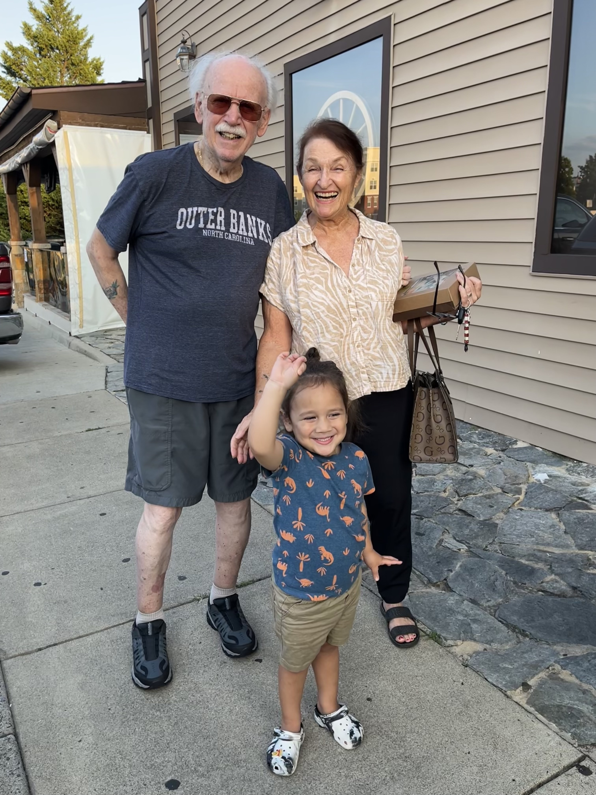
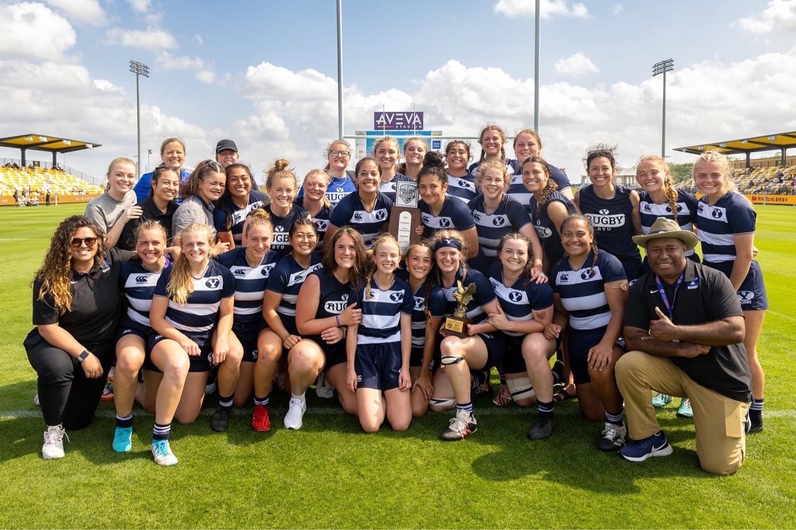

Who am I?
I am from Gainesville, Virginia and the middle child of seven. I grew up finding peace and success in art and I love to explore different mediums and create new things that I feel inspired by. My family is a big part of who I am and why I do the things I do. The biggest familial influence in my life is my grandma. She is an artist who takes creative liberties to the max. I can be creative and bond with her over our next big project or something as small as an idea. Thanks to my "Bamma", I can branch out on curiosity and take risks both in art and life.
Other interests
Aside from creating art and learning new crafting skills, I enjoy working out, reading, watching movies, hanging out with my family and playing rugby. I was a member of the BYU Womens Rugby Team here at school, and to say it was fun was an understatement. I have been playing for almost 10 years now. From many years of playing, I have learned how to be a team player, how to uplift others, work hard as an individual to contribute to a greater success, and how to push myself beyond my own limitations. To be successful in rugby you have to be strong. Not only physically strong, but mentally and emotionally as well. You play for a team and you contribute to the team no matter how big or small you are. A quote I always loved from our old coach Tom Waqa was "Sisters not teammates."
Why Advertising?
I didn't take the traditional route of getting into advertising or show any interest before applying and being accepted into the program. I switched majors many times and always felt out of place no matter what class I was in. In my first COMMS class, I knew I was right where I belonged and this was going to be a new challenge and chapter of my life. Advertising really does open doors and just as this one at BYU is about to close, I can say I grew and learned all that I could to be successful in the future.